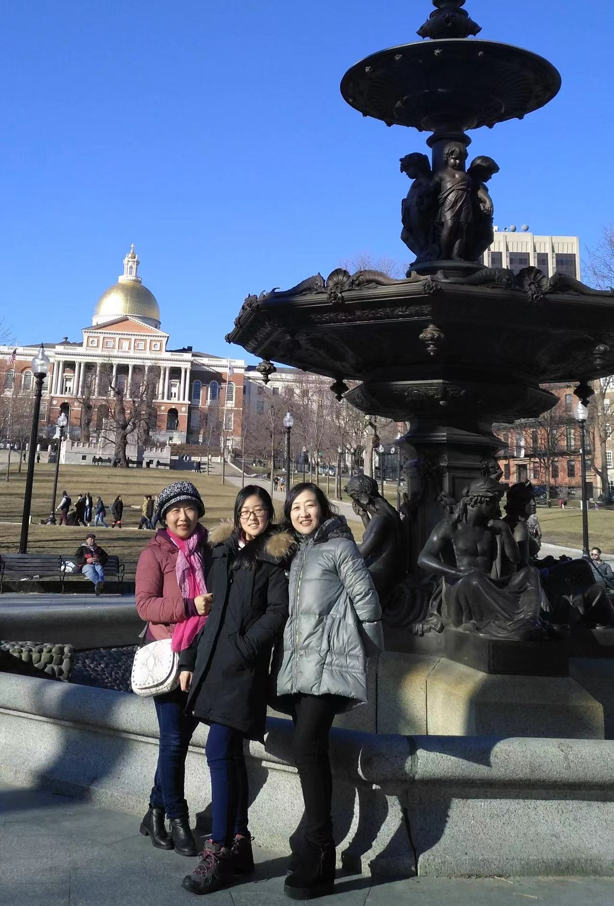

We were a family of five people. My grandma and grandpa had been married for 50 years. They did not take their wedding photos until their 50th anniversary. I was pleased to witness that moment and be there as well. but I lost my grandpa in 2019.


I have 'two' mums. My aunt and my mum. My mum and dad got divorced when I was young. My aunt accompanied me growing up. She has no child, so she regards me as her own child. She always has a young mind and loves trying out different things. My mum is a dedicated and respectful engineer. She spends most of her time working. Despite that they have very different hobbies and personality, they are both confident, optimistic female and very professional in their career.
